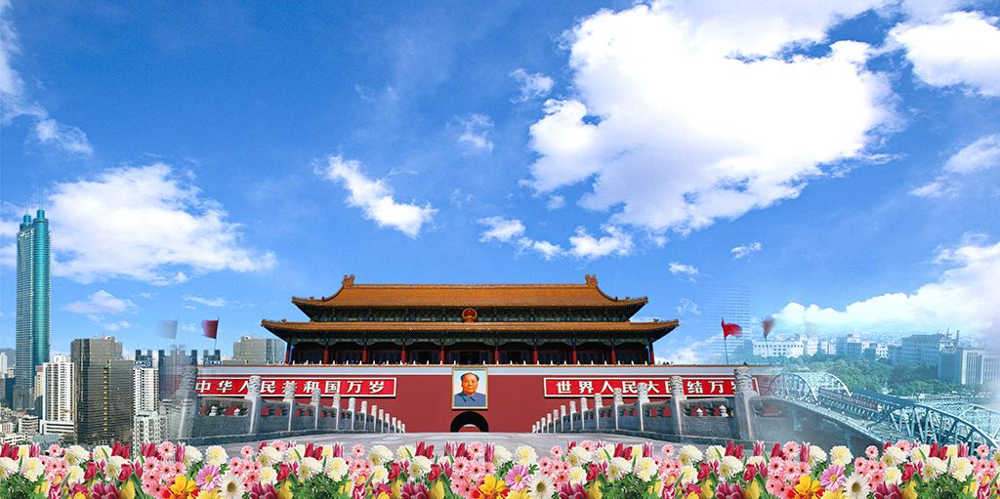
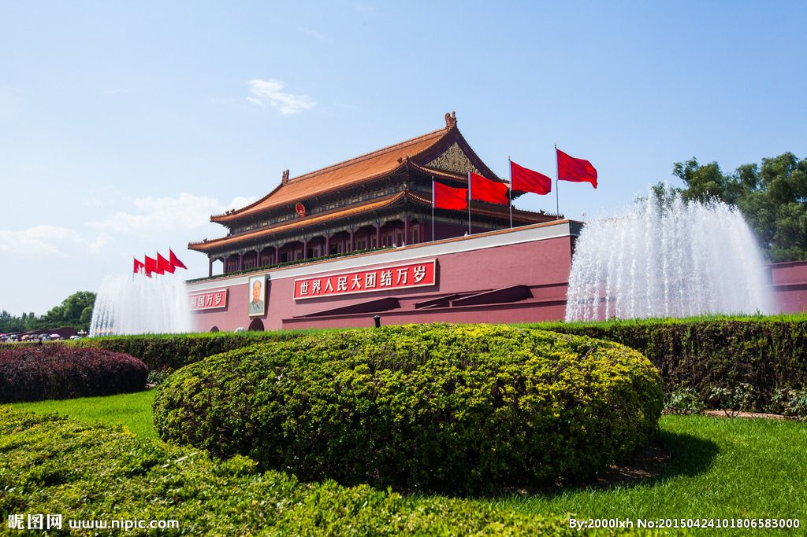
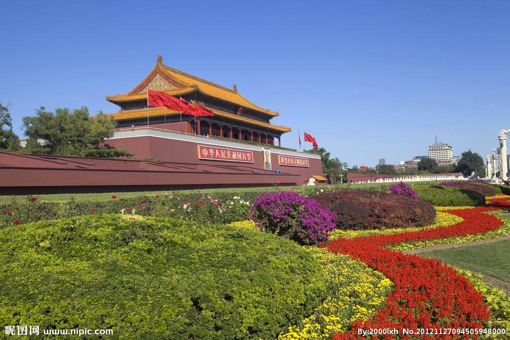
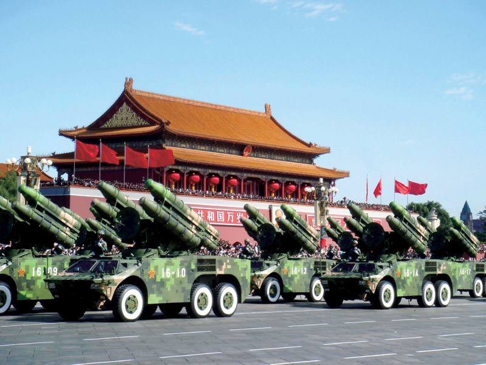
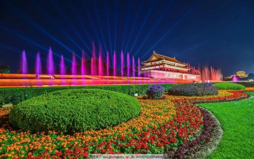

门票 |
|||||
| 名称 | 提前预定时间 | 票价 | 支付方式 | ||
| 单票 | 北京51个必游景区手机智能语音导游套餐 | 当天16：00前 | ￥29.9起 | 在线支付 | 预定 |
| 单票 | 北京天安门智能中文语音讲解 | 当天15：00前 | ￥8起 | 在线支付 | 预定 |
景点简介 |
|
|  |  |
天安门广场位于北京市中心的中轴线上，北起天安门，南至正阳门，东起国家博物馆，西至人民大会堂，面积达44万平方米。 每天清晨的升国旗和每天日落时分的降国旗是天安门广场上最庄严的仪式. |
|
|  | |
天安门广场升（降）国旗仪式分为节日升旗仪式和平日升旗仪式。每年元旦、春节、国际劳动节、国庆节和每月1、11、21日实施 节日升旗仪式。 |
|
|  |  |
天安门广场夜间执行清场制，升旗前（夏季一小时，冬季半小时）开放入口，降旗后（夏季一小时，冬季半小时）关闭入口，清 场。游客可在升旗前一小时到广场附近等侯。 |
|